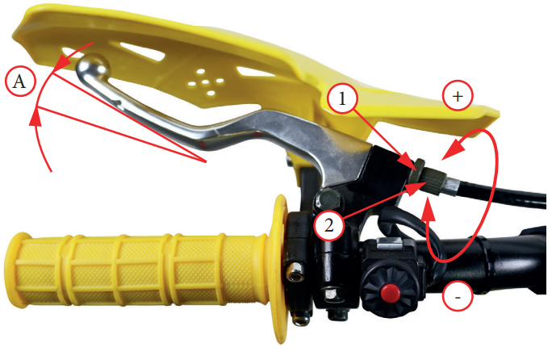
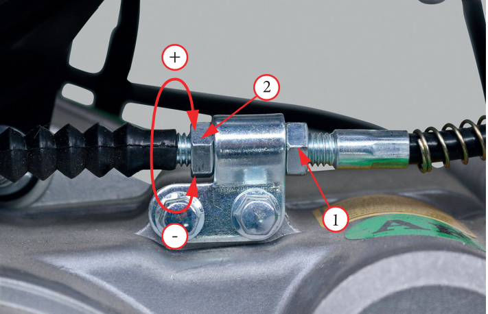

Проверка свободного хода рычага сцепления
Для обеспечения максимальной производительности и долговечности сцепления, проверьте величину свободного хода
рычага сцепления
«А» фото 5.10, который должен составлять
10–20 мм. Отсутствие свободного хода может привести к преждевременному износу сцепления.
При необходимости отрегулируйте до указанного значения
Регулировка свободного хода рычага сцепления
Регулировка сцепления требуется, если двигатель глохнет при
включении передачи, или питбайк проявляет тенденцию к самопроизвольному перемещению вперед, а также если сцепление буксует, вызывая отставание разгона от увеличения частоты вращения вала двигателя.
Незначительные регулировки производятся регулятором
рычага сцепления
2
Нормальный свободный ход «А» рычага сцепления составляет 10–20 мм.
- Ослабьте
стопорную гайку
1
- Для уменьшения свободного хода поворачивайте
регулятор троса
2 в направлении «–», для увеличения свободного хода поворачивайте регулятор троса в направлении «+»
- Затяните
стопорную гайку
1 и проверьте регулировку
Регулировка сцепления на двигателе
Регулировка сцепления на двигателе используется в случае,
если возможности регулировки с помощью регулятора троса
со стороны рычага сцепления исчерпаны, либо если не удается
добиться необходимой величины свободного хода.
- Ослабьте
стопорную гайку
2
- Для уменьшения свободного хода закручивайте
гайку
регулятора троса 1 в направлении «–», для увеличения свободного хода закручивайте гайку
регулятора троса 2 в направлении «+».
- Затяните стопорную
гайку
2 и проверьте регулировку
- По необходимости, проведите окончательную регулировку
при помощи регулятора троса со стороны рычага сцепления
Запустите двигатель, нажмите рычаг сцепления и включите
передачу. Убедитесь, что двигатель не глохнет и мотоцикл не
двигается вперед. Постепенно отпускайте рычаг сцепления и
открывайте дроссельную заслонку. Питбайк должен плавно
тронуться с места и начать движение
Если не удается отрегулировать величину свободного хода, или сцепление работает неправильно, это может указывать на износ
или повреждение троса, либо на износ дисков сцепления